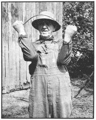

Cut a fresh forked stick of peach, hickory, dogwood, cherry-or whatever works for you-and experiment with overhand and underhand grips while walking back and forth over a known water vein, underground spring, well, etc.
When you feel the stick begin to bend, hold it tightly so it will not roll in your hands. If your dowser is working properly, the pull will be strong enough to shred the bark on the stick and leave red friction marks on the inside of your fingers.
A straight stick, or flexible vine, may also be used by bending it into an arc, but this is more difficult to hold securely and it is easier to let the curve roll downward rather than waiting for the pull of water to bend the entire stick. Also, the vine may not work for you; it seems to be suitable for only a few skilled dowsers, whereas the forked stick works for almost everyone.
A few very sophisticated dowsers use a metal rod, but this is a specialized piece of equipment and must be carefully manufactured to exact specifications . . . and it doesn't work a bit better than the good old peach limb. You would be well advised to stick with Mother Nature's bountiful tools.
In the accompanying article you will notice that the dowsers, using a variety of methods, disagree on why water witching works and even on who can do it. They use different woods and claim to be able to predict different things, such as depth of water or direction of flow. But one thing they all agree on-the thing that has been proven by well after well-is that they do locate water.
An adequate water supply is a must for every rural home and homestead and nothing has proven more effective or simpler to use for finding water than the ancient dowsing rod. Why not try it?
For information on types of wells and general location away from contamination, see MOTHER NO. 2, page 22.
|
 A.B. Lowery demonstrates his grip. |
|
|